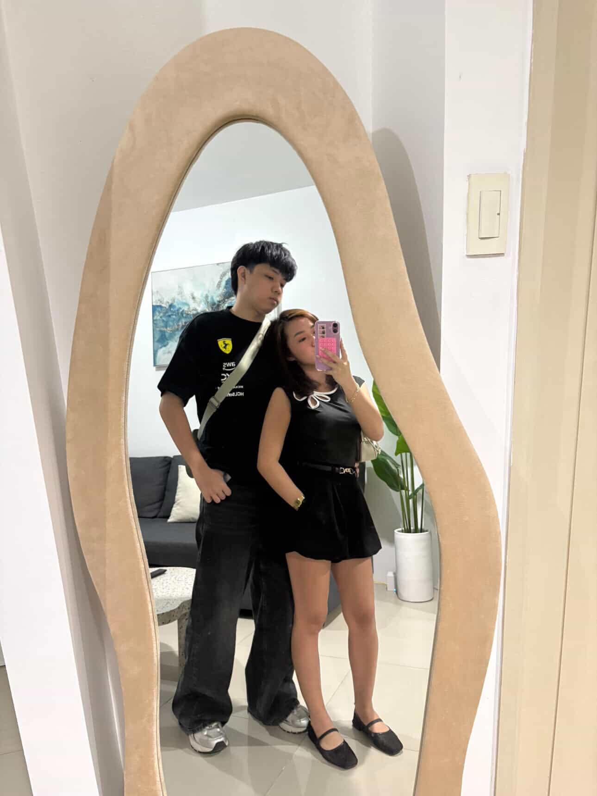
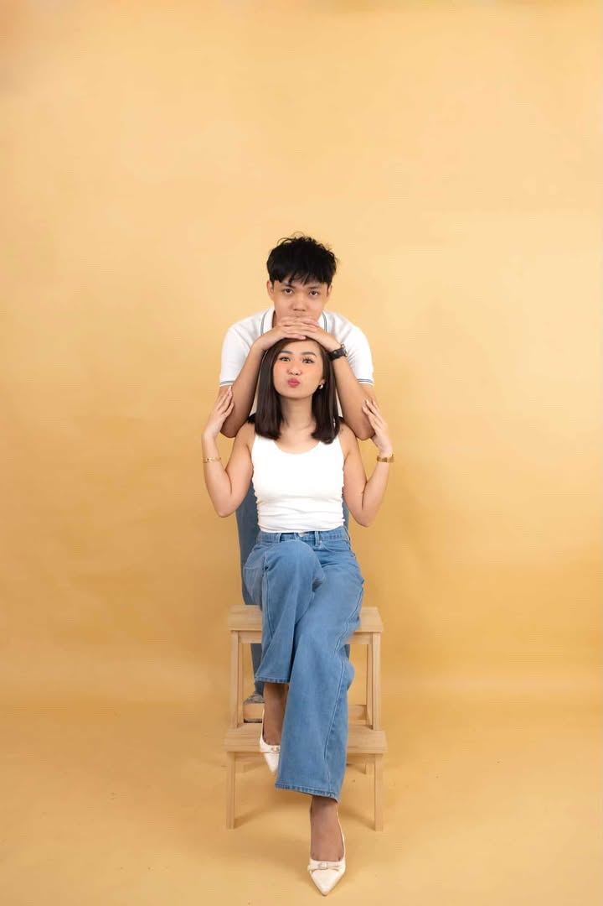
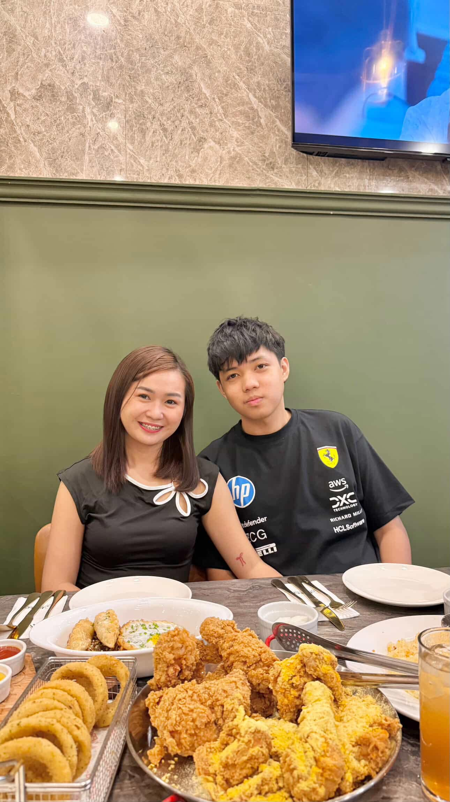
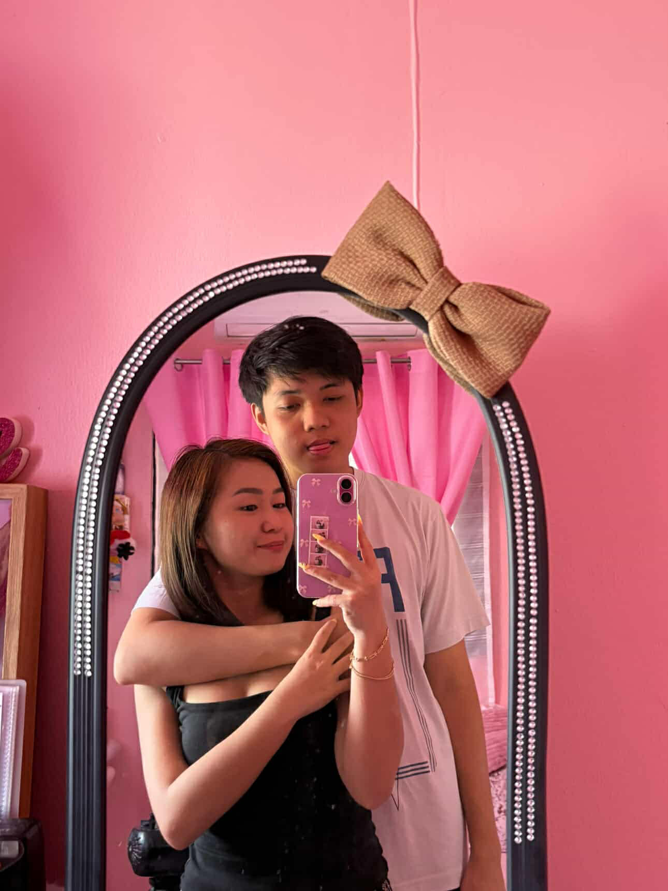
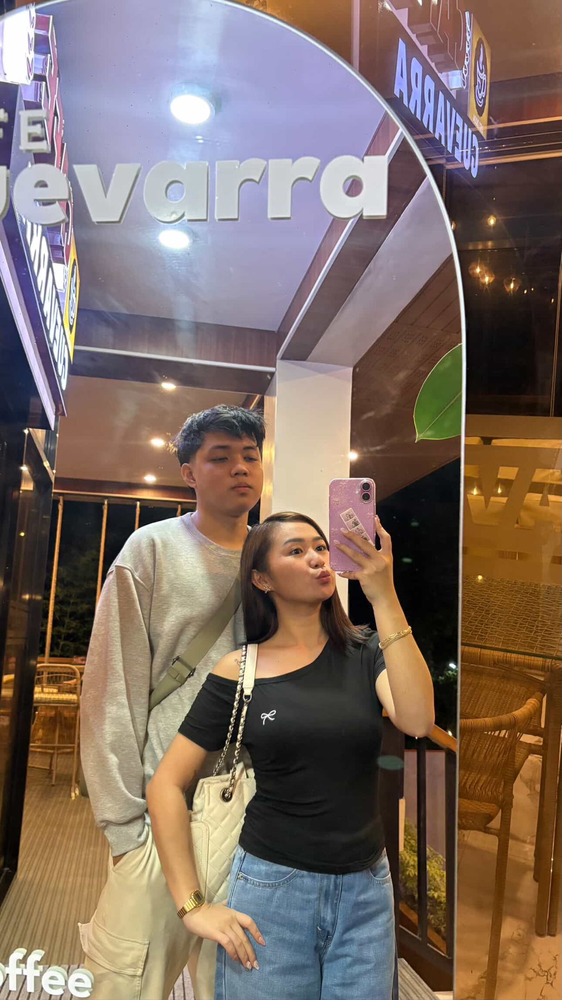

🎵 Now Playing
YOU & I
One Direction
One Direction
Hello my love, Happy 8th months to us full of memories together.
I'm really thankful, greatful and overwhelmed for the love you gaving me. meron akong hindi pa nakwekwento sayo baby there is one thing that really makes me feel that I want to marry you someday it's something that you did from your previous job when you quit because you think of me. nung sinabi mo po sakin yun ang isa sa dahilan mo sobrang saya ko aaminin ko baby naiyak ako sa tuwa hehe i never thought that i will be love in this way. I appreciate everything you do for me my love yun I cherish everything from suprising on my birhday hangang ngayon na you still stay and choose me kahit may nagawa akong sobrang lalang kasalanan sayo. baby everytime I see you napapanatag lagi pakiramdam at isip ko kahit video call or personal pero iba parin talaga pag nakikita kita personal at nahahawakan na tapos na mimiss ko araw araw yung hugs and kisses mo.
Baby I want to say thankyou for everything sa mga libre mo sakin at mga gamit na binibigay mo sobrang sarap pala sa pakiramdam na maka recieve sa taong mahal na mahal mo but i really feel guilty i want to spoil you so bad please baby kapag may work na ko and i can afford to do wag mo ko pipigilan. totoo yung sinabi mo sobrang sarap sa feeling pag nakikita mo ginagamit yung isang bagay na bigay mo. dont you worry ginagamit ko na lahat ng bigay mo Baby pero pag naluma yun wagka magagalit kahit gamit ko parin pang alis natin. I love you so much baby and thankyou for everything.
I know we have been in a lot of problem specially yung problema sakin, I will do everything to fix myself the only problem lng naman nakikita ko baby is yung anxiety natatakot po talaga ako Baby hindi ko alam bakit bumalik pa tong sakit ko na toh i really fucking hate this feeling. Im really sorry at nadadamy pa kita alam kong burden din sayo if nahihirapan ka na po intindihin yung anxiety ko sabihan mo lng po ako ill try handle it by myself. Im really thankful dahil iniintindi mo ako sobrang nakakatulong ka baby you making me realize somethings that i dont think I will realize soon enough kung wala ka. grabi lng din talaga preasure sakin baby to the point pati yung sa relationship natin nadadamay sa pag iisip ko. but im really uncomfortbla you being close with someone that i dont trust you ask me before kung ano gusto kong gawin ko isa lng po siguro baby dont be too close im not controlling you na wag kausapin or what i understand it is part of your work maybe just make it a more casual type of workmates. Baby I will make sure na maayos ko toh by my self and also sa tulong mo po, to bring back yung dating ako na kilala mo
I really love you baby ko. I will do everything for you kahit I hope you malagpasan natin lahat ng problems and challenges na kakaharapin natin hindi lng sa relationship pati narin sa personal life im always here for you baby ko. if you have a problem sa life or sa relationship natin you can always talk to me about it dont be so hard with yourself na sinasarili mo yung mga problems mo po nandito lng ako laging handang makinig sayo.
I love you so much my love of my life





